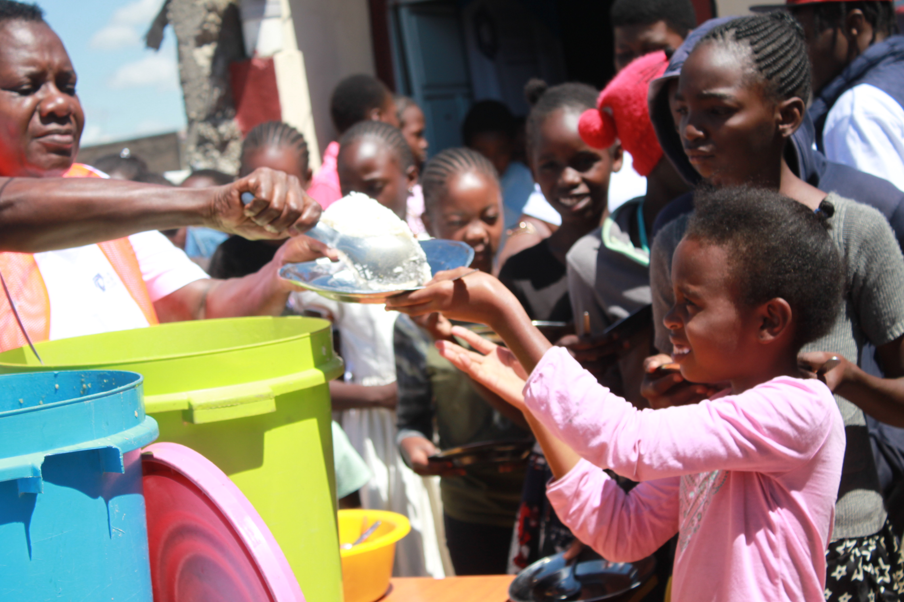

What We Are Doing
We've Done Lot's of Awesome Events

Nourishing the Future
In a heartfelt initiative, Tuwajibike Workers Consortium provided nutritious lunches to needy students, ensuring they have the energy and focus to excel in their studies. This event aimed to support their educational journey by addressing one of their most basic needs.

Dignity and Health: Sanitary Towels Distribution
Addressing a critical need, Tuwajibike Workers Consortium distributed sanitary towels to girls who cannot afford them. This initiative aimed to promote health, dignity, and uninterrupted education for girls, ensuring they have the necessary resources to manage their periods safely and confidently.

Empowering Dreams: Embrace Your Future
Tuwajibike Workers Consortium hosted an inspiring session for children, encouraging them to embrace their future with optimism and resilience. Through motivational talks and interactive activities, the children were taught the importance of perseverance and self-belief, no matter their current circumstances.

Knowledge is Power: Children's Rights and Responsibilities
Tuwajibike Workers Consortium conducted an educational session on children's rights and responsibilities. The children were taught about their legal rights, the importance of understanding them, and their responsibilities as young citizens. This event aimed to empower children with knowledge, fostering a sense of responsibility and awareness about their roles in society.

{kind=link}